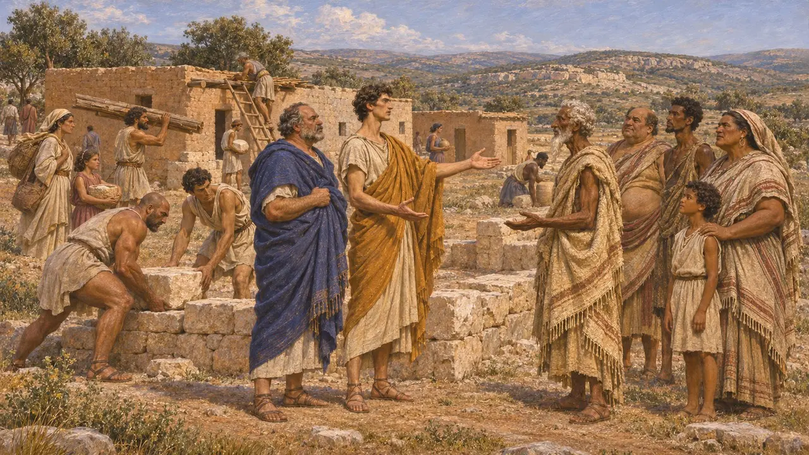
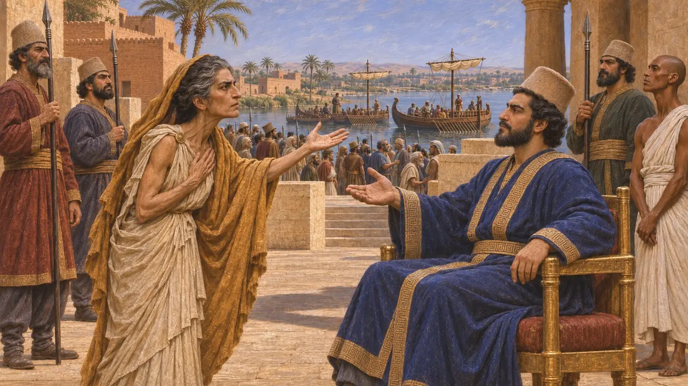
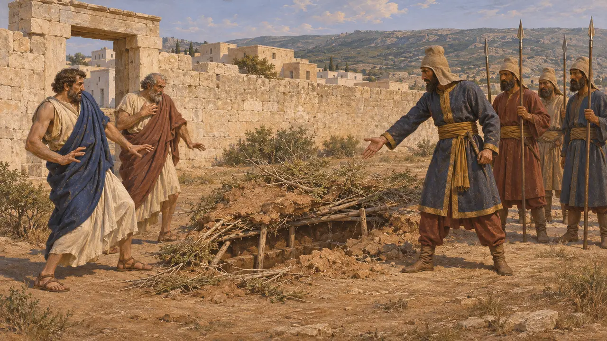
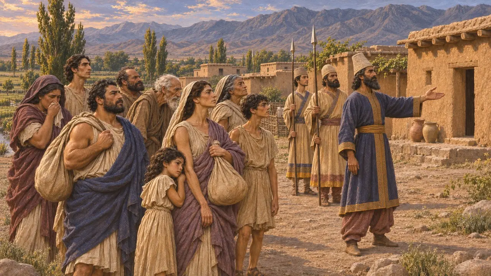
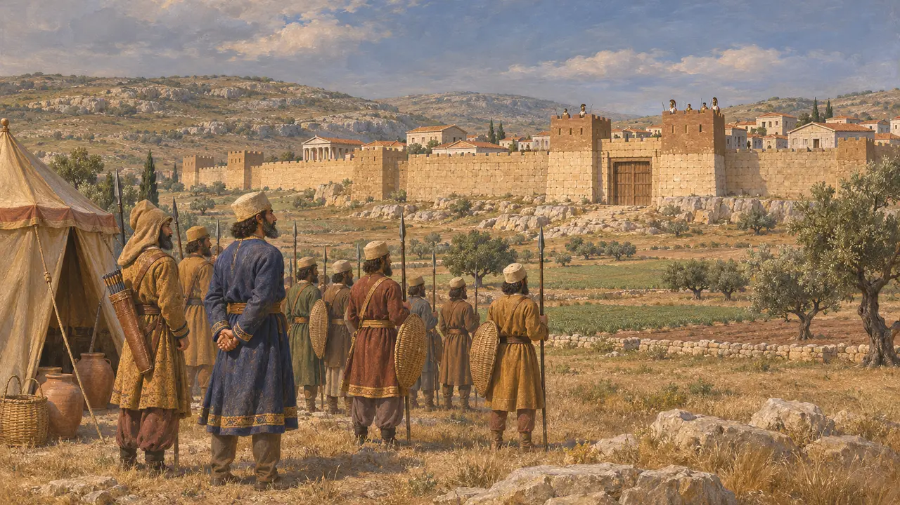

Barcé
Cité grecque de Cyrénaïque, en Libye, assiégée par une armée perse, probablement vers 513 av. J.-C.
Dans le jeu : Niveau 2 : Le Porte-lance
Barca était une cité grecque de Cyrénaïque, fondée à partir de Cyrène, probablement au VIe siècle. Hérodote raconte qu'une armée perse envoyée d'Égypte par le satrape Aryandès l'assiégea pendant neuf mois et s'en empara par une ruse. Beaucoup de survivants furent déportés en Bactriane, signe de la distance sur laquelle le Roi pouvait déplacer les peuples vaincus.
Dans le jeu : Barcé n'a ni mécanique ni niveau qui lui soient propres. Le jeu ne la nomme que dans ses articles d'événements, principalement le siège de Barcé, qui reprend les neuf mois rapportés par Hérodote.

Une cité fondée depuis Cyrène
Récit antiqueHérodote dit que Barcé naquit lorsque des frères de la maison royale de Cyrène se querellèrent avec leur parent qui régnait, quittèrent la cité et fondèrent un établissement parmi les Libyens. Ce récit repose sur le seul témoignage d'Hérodote.
Herodotus 4.160

Pourquoi les Perses sont venus
Récit antiqueHérodote dit qu'Arcésilas III de Cyrène s'enfuit à Barcé et y fut tué. Sa mère Phérétimé se rendit en Égypte et demanda de l'aide au satrape Aryandès. Hérodote présente la vengeance du meurtre comme la raison de cette expédition, et dit qu'Aryandès lui donna une armée et une flotte.
Herodotus 4.164-167

Les neuf mois et la ruse
Récit antiqueHérodote raconte que les Perses creusèrent des mines, mais qu'un artisan du bronze les découvrit en écoutant à l'aide d'un bouclier de bronze tenu contre le sol. Les Perses proposèrent alors des conditions et prêtèrent un serment qui vaudrait tant que le sol sous leurs pieds resterait tel qu'il était. Les Barcéens sortirent, et les Perses violèrent leur serment en laissant s'effondrer la couverture dissimulée d'une tranchée.
Herodotus 4.200-201

Châtiment et déportation
Récit antiqueHérodote raconte que Phérétimé fit empaler les coupables tout autour du rempart et couper les seins de leurs épouses. Le reste des Barcéens fut emmené en Bactriane, où Darius leur donna un village. Hérodote ajoute qu'on l'appelait encore Barca de son temps.
Herodotus 4.202-204

Date et ampleur
ContestéHérodote ne date pas précisément l'expédition, et de nombreux historiens la placent vers 513 av. J.-C. Les historiens divergent aussi sur la solidité de l'emprise perse sur la Cyrénaïque par la suite. Aucune inscription ni tablette perse connue ne mentionne le siège ; le récit reste donc grec.
P. Briant, From Cyrus to Alexander, 2002
Sources
- Herodotus 4.160
- Herodotus 4.164-167
- Herodotus 4.200-204
- P. Briant, From Cyrus to Alexander, 2002